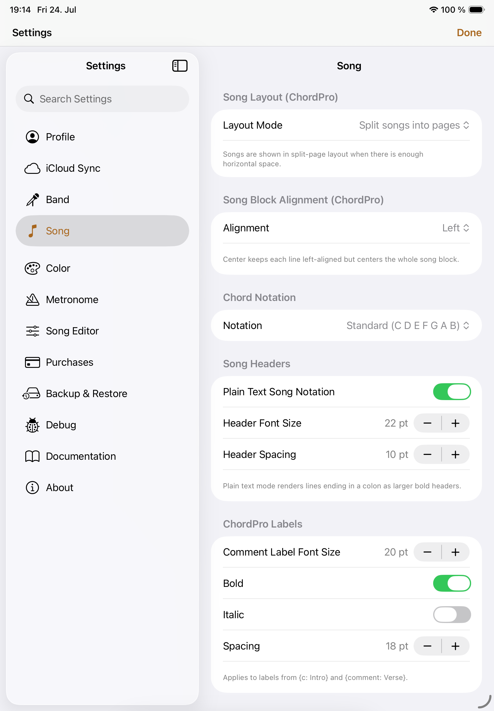

Preferences
Settings
Songivo is fully customizable, so your songbook can feel at home in rehearsal, on stage, and everywhere in between.

Profile
Personalize the details and controls you see most often.
- Your display name for song history and band attribution.
- The iPad top-bar title size.
- The floating control overlay’s size and transparency.
- Song and setlist numbering, plus song-list sectioning.
iCloud Sync
Keep your personal library in step across your devices.
- There is nothing to configure in Songivo: songs, setlists, tags, and themes sync automatically when iCloud is available.
- Use the status display to confirm that your library is up to date.
Band
Set up and manage the shared libraries your group uses.
- Create a band, join one from a shared link, or select the band you manage.
- Name a band, invite members, and manage membership.
- Share an invite link for collaborators.
Song
Shape how ChordPro songs read on the screen.
- Chord notation, layout mode, split-page threshold, and song-block alignment.
- Song-header and ChordPro-label size, spacing, and emphasis.
- Body text size and font family.
Color
Give your charts a look that is clear in any lighting.
- System, light, or dark appearance.
- Chord, lyric, background, verse, chorus, and bridge colors for light and dark themes.
- ChordPro label colors for light and dark themes.
Metronome
Make the metronome fit your playing environment.
- The beat-flash color.
- The metronome click sound.
Song Editor
Keep the editor focused on the information your library needs.
- Whether author, copyright, CCLI, and time-signature fields appear.
Purchases
Manage your Songivo plan and available band capacity.
- Choose a yearly unlimited-song subscription or a lifetime unlimited-song unlock.
- Add active band slots when your group needs more room.
- Restore eligible purchases for your Apple Account.
Backup & Restore
Back up a library or restore it when you need to.
- Choose a personal or band library to export as a backup.
- Choose the destination library when restoring a backup.
Documentation
Find help whenever you need a refresher.
- Open the documentation or start the in-app tutorial.
About
Find the essentials about the app and where to get help.
- View app version information, contact support, or open the privacy policy.